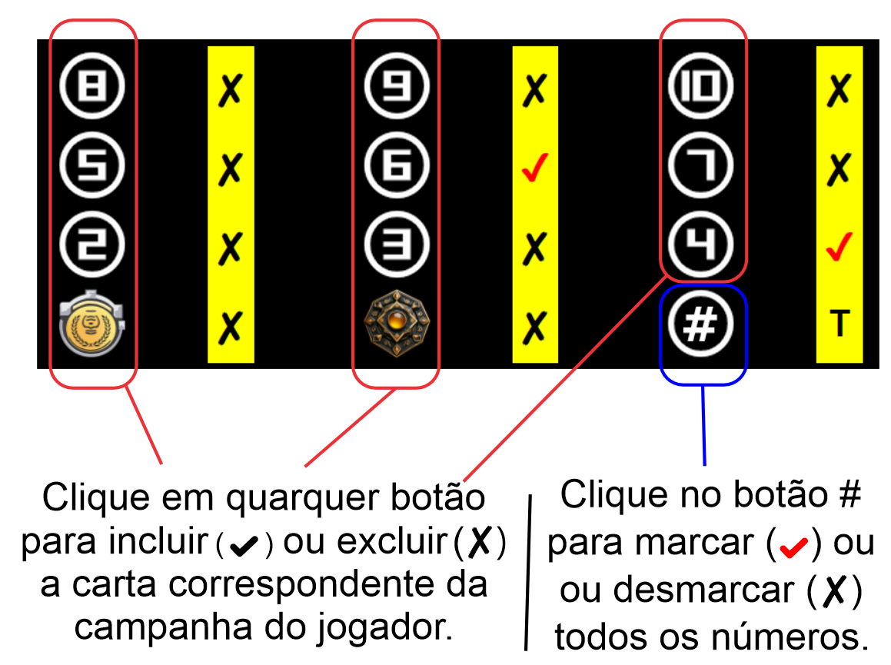

")
1 - A Tabela de Resultados
1.1 - Descrição das colunas da Tabela de Resultados

A Tabela de Resultados suporta até 8 jogadores e três partidas do Jogo Exploradores.
Você vai ter acesso simples ao cálculo de Campanhas e Mão.
1.2 - Onde clicar pra editar.

1.3 - Botões Reset e Manual
No final da tela você vai encontrar estes botões:

2 - Calculadora de Mão
2.1 - Cabeçalho da Calculadora de Mão
Clicando na linha do jogador e na partida correspondente a Calculadora de Mão abre trazendo o número da partida e o nome do jogador.

2.2 - Botões da Calculadora de Mão
Clique nos botões Menos e Mais para diminuir ou adicionar um item para calcular.

2.3 - Total da Calculadora de Mão

2.4 - Finalizar o cálculo da Mão
Ao finalizado o cálculo da Mão para um jogador clique no botão Voltar para retornar à Tabela de Resultados.

3 - Calculadora de Campanha
3.1 - Cabeçalho da Calculadora de Campanha
Observe que a tela apresenta vários itens na cor da campanha escolhida, para facilitar a utilização.

3.2 - Botões da Calculadora de Campanha
Usando os botões correspondentes às cartas de pontuação o cálculo será feito automaticamente a cada mudança.
Note que as cartas Certificado Federal e Proteção não pontuam e por isso não interferem no cálculo.
DICA: Usando o botão # (Todos) irá marcar ou desmarcar todos os números. (Somente os números!)

3.3 - Quantidade de Cartas Tesouro e Financiamento

3.4 - Total da Cor

3.4 - Finalizar o cálculo da Campanha

4 - Compartilhando o Resultado
4.1 - Capture a tela e compartilhe nas redes usando a hashtag: #JogoExploradores